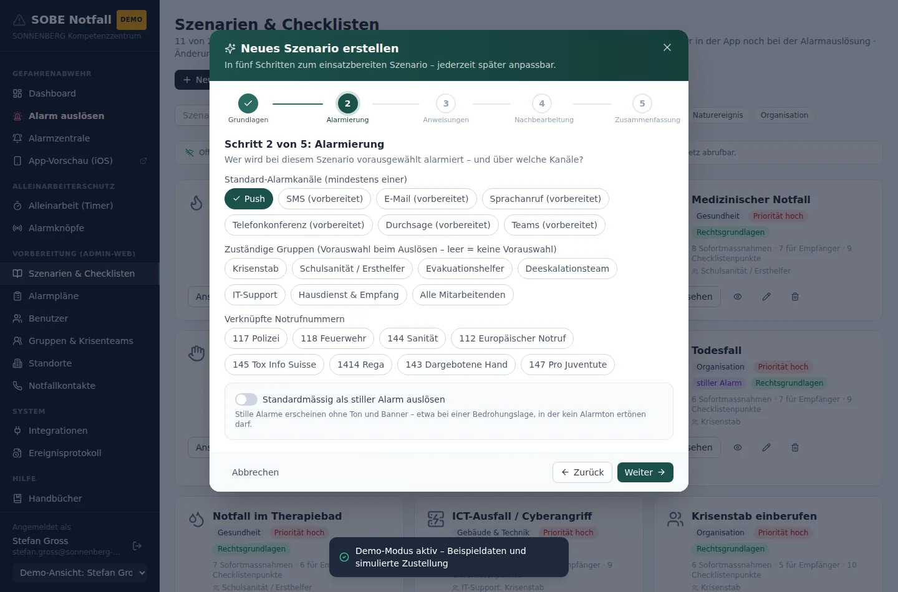
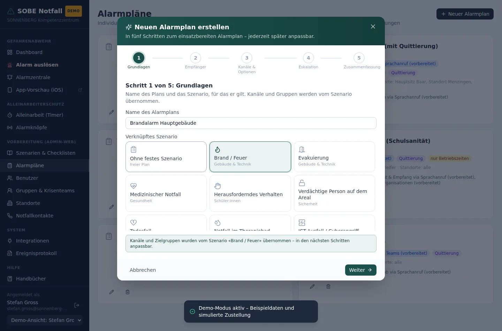

1 Anmelden und erstes Passwort
Ohne Anmeldung ist nichts zugänglich – weder das Portal noch die App. Angemeldet wird mit E-Mail-Adresse und Passwort.

Die erste Anmeldung im Live-Betrieb
Ein frisch aufgesetzter Alarmserver kennt genau ein Konto: das Administratorkonto mit einem Erstpasswort. Die Anmeldemaske nennt beides, solange noch niemand ein eigenes Passwort vergeben hat.

Unmittelbar nach der Anmeldung verlangt das System ein eigenes Passwort. Vorher geht es nicht weiter – auch nicht über die Adresszeile.

Gut zu wissen
Dieselbe Sperre greift bei jedem Konto, für das Sie beim Anlegen Passwortänderung bei der nächsten Anmeldung erzwingen angekreuzt haben. Sie geben also ein Startpasswort weiter und wissen sicher, dass es nach der ersten Anmeldung nicht mehr gilt.
2 Das Portal im Überblick
Das Menü links folgt dem Lebenszyklus eines Ereignisses, von oben nach unten:
| Bereich | Was dort liegt |
|---|---|
| Im Ereignis | Dashboard, Alarm auslösen, Alarmzentrale – was in Sekunden erreichbar sein muss |
| Laufender Betrieb | Alleinarbeit, Alarmknöpfe, Ereignisprotokoll – der Alltag zwischen den Ereignissen |
| Vorbereitung | Szenarien, Alarmpläne, Notfallkontakte – die Inhalte, die im Ernstfall greifen |
| Organisation | Benutzende, Gruppen & Krisenteams, Standorte – wer dazugehört und wo |
| System & Hilfe | Einstellungen & Konfiguration, App-Vorschau und die Handbücher – immer in der Fassung, die zur laufenden Version gehört |
Doppelrollen prüfen
Wer in zwei alarmierten Gruppen ist, bekommt in einem Szenario zwei Aufgabenlisten – beim Brand etwa «Sammelplatz sichern» als Evakuationshilfe und «Führungsraum beziehen» als Krisenstab. Das sind zwei Orte zur selben Zeit.
Das Portal weist beim Bearbeiten einer Person darauf hin, in welchen Szenarien ihre Gruppen zu widersprüchlichen Aufgaben führen. Es ist eine Warnung, keine Sperre: In einem kleinen Team ist eine Doppelrolle manchmal unvermeidbar – dann soll sie bewusst vergeben werden. Die App zeigt den Betroffenen ihre Aufgaben getrennt nach Rolle, damit sie die Lage erkennen und entscheiden können.
Was der Krisenstab sieht
Das Portal steht der Administration und dem Krisenstab offen, aber nicht mit demselben Umfang. Dem Krisenstab fehlen Benutzende, Gruppen & Krisenteams, Standorte, Einstellungen & Konfiguration und die App-Vorschau – also alles, was die Grundordnung des Systems betrifft. Alarmieren, führen, nachbereiten und die Vorbereitung pflegen kann er vollständig.
Die Administration findet unten in der Menüleiste einen Umschalter Administration / Krisenstab. Damit sieht sie das Portal so, wie es der Krisenstab sieht – nützlich vor einer Schulung. Es ist eine Ansicht, keine Rechtebeschränkung: Wer sie umlegt, bleibt auf dem Server Administration. Die Wahl gilt bis zum Abmelden.

Die Zeilen im Alarmserver-Status sind anklickbar: Ein Klick auf SMS-Gateway, Microsoft Teams, LoRaWAN-Netz und die übrigen Zeilen führt direkt zu der Einstellung, die diesen Zustand bestimmt – die betreffende Karte wird kurz hervorgehoben. So muss niemand auf der langen Integrationsseite suchen.
Darunter die Kachel Bereitschaft – die Antwort auf die Frage, ob ein Alarm die Leute überhaupt erreicht: pro Standort, wie viele Personen ein Gerät mit der App registriert haben und wie viele Critical Alerts erlauben; ob der Push-Dienst erreichbar ist; wann die letzte Sicherung lief; wann die wöchentliche Testmeldung an die Administration ging. Mit Testmeldung an mein Telefon prüfen Sie die Kette bis aufs eigene Gerät.
Ganz unten in der Seitenleiste steht, als wer Sie angemeldet sind, und ob das Portal mit dem Alarmserver verbunden ist.
App-Vorschau
App-Vorschau öffnet die App im Browser. Oben steht eine gelbe Leiste Vorschau als: Dort wählen Sie jede erfasste Person und sehen die App so, wie sie diese Person sieht – ihre Alarme, ihre Schritte je Gruppe, ihren Standort. Das eignet sich zum Prüfen, ob Gruppen und Schritte richtig zugeordnet sind. Im Live-Betrieb ist die Vorschau reine Ansicht: Quittieren, Auslösen und Timer sind gesperrt, weil sie sonst unter Ihrem eigenen Konto liefen.
3 Alarm auslösen
Unter Alarm auslösen wählen Sie ein Szenario oder einen fertigen Alarmplan. Das System füllt daraufhin Empfängergruppen, Kanäle und Eskalationsstufen vor.

- Szenario oder Alarmplan anklicken.
- Prüfen, wer als Empfänger:in angezeigt wird – die Zahl steht direkt über dem Auslöseknopf.
- Bei Bedarf Anpassen öffnen: Standort eingrenzen, Kanäle ändern, stille Auslösung oder Quittierpflicht setzen.
- Alarm auslösen gedrückt halten, bis der Balken durchgelaufen ist.
Warum gedrückt halten
Alle auslösenden Knöpfe reagieren erst nach gut einer Sekunde Halten. Ein versehentlicher Klick löst deshalb keinen Alarm aus.
Stiller Alarm
Ein stiller Alarm erreicht die Empfänger:innen als Mitteilung ohne Ton und ohne Vibration – sie erscheint auf dem Sperrbildschirm und in der App violett gekennzeichnet, aber kein Telefon klingelt. Er ist für Lagen gedacht, in denen Aufsehen schadet: herausforderndes Verhalten, eine verdächtige Person auf dem Areal, ein Todesfall, Amok / Bedrohungslage. Der normale Alarm dagegen klingelt auch bei stummgeschaltetem Telefon und durchbricht Fokus-Modi. Szenarien mit der stillen Voreinstellung sind im Portal mit stiller Alarm gekennzeichnet.
Wenn zwei Personen dasselbe auslösen
Es bleibt bei einem Alarm. Läuft für ein Szenario am gewählten Standort bereits ein Alarm, führt der Server eine zweite Auslösung innerhalb von zwei Stunden mit ihm zusammen: Die neue Meldung erscheint als «weitere Meldung» im Journal und bei allen Empfänger:innen, neu gewählte Standorte werden zusätzlich alarmiert, Quittierung und Entwarnung gibt es nur einmal. Die App zeigt der zweiten Person vorher einen Hinweis mit Name und Zeit; ihr Auslöseknopf heisst dann Meldung zum laufenden Alarm ergänzen. Übungen und Ernstfälle werden nie zusammengeführt.
Übung
Unter Anpassen steht der Schalter Übung. Der Ablauf bleibt derselbe: Zustellung, Quittierung, Eskalation, Entwarnung. Aber jede Mitteilung trägt den Vorspann «ÜBUNG», die App kennzeichnet den Alarm gelb, das Protokoll führt Übungen getrennt (Filter Übungen), und Webhooks an Drittsysteme wie eine Brandmeldeanlage bleiben stumm. Damit lässt sich die vorgeschriebene jährliche Räumungsübung mit dem echten System durchführen.
Der Knopf in der App
In der App steht Alarm auslösen oben rechts auf jeder Seite. Er führt zur Wahl des Ereignisses und direkt in die Phase «Alarmieren» des Szenarios. Push-Mitteilungen sind verknüpft: Antippen öffnet die Handlungsanweisung zum Alarm, nach dem Beenden die Schritte nach der Entwarnung.
4 Die Alarmzentrale
Sobald ein Alarm läuft, erscheint oben ein roter Balken und in der Seitenleiste eine Zahl. Die Alarmzentrale zeigt für jeden laufenden Alarm, wen er erreicht hat, wer geantwortet hat und was wann geschehen ist.

Lagemeldung und Entwarnung
Unter jedem aktiven Alarm steht ein Eingabefeld für Lagemeldungen. Was Sie dort senden, erreicht alle Empfänger:innen als Mitteilung und steht in ihrer Handlungsanweisung zuoberst. Beenden fragt nach einem Hinweis, der mit der Entwarnung mitgeht – etwa «Rückkehr ab 10:30 über den Haupteingang». Beides steht danach im Journal.
«Zugestellt» bedeutet: Das Gerät hat den Empfang bestätigt. Der Server holt dazu die Quittungen beim Push-Dienst ab. «Gesendet» heisst, der Push-Dienst hat die Meldung angenommen; «fehlgeschlagen» steht bei Personen ohne registriertes Gerät oder wenn die App deinstalliert wurde. Meldet die auslösende Person einen Fehlalarm, erscheint die Kennzeichnung Fehlalarm gemeldet.
Für die Nachbearbeitung
Das Journal ist Ihr Nachweis gegenüber Aufsicht, Versicherern und Strafverfolgungsbehörden. Beenden Sie einen Alarm erst, wenn die Lage tatsächlich abgeschlossen ist – der Zeitpunkt wird festgehalten.
5 Szenarien und Checklisten
Szenarien sind das Herz des Systems. Jedes enthält, was im Ernstfall auf dem Telefon erscheint: Hinweise zum Notruf, die Sofortmassnahmen, die Massnahmen nach der Akutphase, eine Checkliste und die Rechtsgrundlagen.

Die Karten stehen alphabetisch, die ausgeblendeten dahinter – sie erscheinen im Ernstfall ohnehin nicht. Wer nur mit den freigegebenen arbeiten will, blendet die übrigen mit <Anzahl> ausgeblendete verbergen ganz aus; der Knopf schaltet auch wieder zurück. Suchfeld und Kategorienfilter wirken zusätzlich.
Ein Szenario ansehen

Ein neues Szenario erstellen – der Assistent
Neues Szenario öffnet einen Assistenten, der in fünf Schritten durch alles führt: Grundlagen (Titel, Kategorie, Priorität, Symbol), Alarmierung (Kanäle, zuständige Gruppen, Notrufnummern, stiller Alarm), Anweisungen (Alarmieren, Sofortmassnahmen, Empfängerschritte), Nachbearbeitung (Entwarnung, weiterführende Massnahmen, Checkliste, Rechtsgrundlagen) und die Zusammenfassung zum Prüfen. Die Schrittleiste oben zeigt den Stand; bereits besuchte Schritte lassen sich direkt anspringen, und «Weiter» bleibt gesperrt, bis die Pflichtangaben des Schritts stehen – ein Titel, mindestens ein Kanal, mindestens eine Sofortmassnahme.

Ein Szenario bearbeiten
Der Stift auf der Karte öffnet den Bearbeitungsdialog mit allen Feldern auf einen Blick – er bleibt der schnellste Weg für gezielte Änderungen an bestehenden Szenarien. Jedes Textfeld nimmt einen Punkt pro Zeile auf; leere Zeilen werden beim Speichern verworfen.

| Feld | Erscheint in der App | Gehört hinein |
|---|---|---|
| Alarmieren | Phase 1 | Wann ein Notruf nötig ist und was am Telefon zu melden ist |
| Sofortmassnahmen | Phase 2 | Nur Handgriffe – keine Anweisungen zum Anrufen |
| Empfänger:innen | eigener Weg «Ich wurde alarmiert» | Was jemand tut, der den Alarm erhält: kein Notruf, keine Auslösung, sondern die eigene Aufgabe – je Schritt wählbar, für welche Gruppen er gilt |
| Nach der Entwarnung | mit der Entwarnungs-Mitteilung | Was die Alarmierten tun, sobald der Alarm beendet ist: Rückkehr nach Freigabe, erneut zählen, festhalten, Nachsorge |
| Weiterführende Massnahmen | Phase 4 | Alles nach der Akutphase: informieren, dokumentieren, nachsorgen |
| Checkliste | Phase 4 | Punkte zum Abhaken für die Nachkontrolle |
| Rechtsgrundlagen | Phase 4, aufklappbar | Orientierungshilfe, keine Rechtsberatung |
Achten Sie darauf
Schreiben Sie das Alarmieren nicht zusätzlich in die Sofortmassnahmen. Der geführte Ablauf beginnt bereits mit dieser Phase; eine Wiederholung im zweiten Schritt widerspricht der Reihenfolge und kostet im Ernstfall Zeit.
Zwei Leser, zwei Abläufe
Ein Szenario hat zwei Leser: die Person, die das Ereignis entdeckt, und alle, die den Alarm erhalten. Die erste ruft an und löst aus; die zweiten tun genau das nicht. Das Feld Empfänger:innen gehört darum zu jedem Szenario, das alarmiert wird – es beschreibt die eigene Aufgabe: Klasse sammeln, Führungsraum beziehen, Bereich sichern. Wer den Alarm in der App erhält, sieht automatisch diesen Weg, nicht den geführten Ablauf.
Und weil eine Person mehrere Rollen hat – Lehrperson und Ersthelferin –, lässt sich jeder Schritt einer oder mehreren Gruppen zuordnen. Ohne Gruppe gilt er für alle. Die App zeigt einer Person nur die Schritte ihrer Gruppen; die übrigen bleiben auf Wunsch einsehbar. Achten Sie darauf, dass jedes Szenario mindestens einen Schritt für alle hat – sonst stünde jemand ohne besondere Gruppe vor einer leeren Seite.
Ein Szenario ein- oder ausblenden
Das Augensymbol auf der Karte entscheidet, ob ein Szenario für Mitarbeitende in der App erscheint. Ausgeblendete Szenarien bleiben vollständig erhalten – sie sind nur nicht sichtbar. So halten Sie die Liste auf dem Telefon kurz, ohne vorbereitete Inhalte zu verlieren.
6 Alarmpläne und Notfallkontakte
Ein Alarmplan ist ein fertig geschnürtes Paket: Szenario, Zielgruppen, Standorte, Kanäle und die Eskalationsstufen mit ihren Zeiten. Im Ereignisfall genügt ein Klick, statt alles einzeln zu wählen.
Vorbereitet, noch nicht aktiv
Von den Kanälen ist heute nur die Push-Mitteilung angebunden. SMS, Sprachanruf, Telefonkonferenz, Durchsage und Teams lassen sich in Plänen und Szenarien bereits wählen, damit die Planung vollständig ist – versendet wird darüber nichts, und in der Alarmzentrale steht bei diesen Kanälen «kein Versand». Dasselbe gilt für «Blaulichtorganisationen benachrichtigen» in den Eskalationsstufen. Überall im Portal ist das einheitlich mit vorbereitet, noch nicht aktiv gekennzeichnet.
Den früheren Schalter «Nur während Betriebszeiten» gibt es nicht mehr. Er wurde nie ausgewertet – und hätte er es je, wäre das falsch gewesen: Ein Notfall nach Uhrzeit zu unterdrücken ist nie richtig. Ein Herzstillstand um 17.30 Uhr braucht dieselbe Alarmierung wie um 9 Uhr.

Der Plan gilt von selbst
Wer ein Szenario auslöst – im Portal oder in der App –, bekommt dessen Alarmplan automatisch: Der Alarmserver sucht den Plan zum Szenario und zum Standort und wendet seine Eskalationsstufen an. Gibt es Pläne für mehrere Standorte, gewinnt der passende; ein Plan ohne Standortbindung gilt überall. Im Portal lässt sich der Plan vor dem Auslösen noch umstellen.
Geändert im September 2026
Bis dahin galt der Plan im Portal nur, wenn man ihn aus einem Dropdown «optional» wählte – und in der App gar nie: Dort schickte jedes Szenario dieselbe fest verdrahtete Eskalation. Der Brandalarm mit Evakuationsteam nach drei Minuten griff aus der App also nicht. Wer sich darauf verlassen hat, dass Pläne wirken, hatte recht – jetzt stimmt es auch.
Ebenfalls neu: Der Krisenstab ist nicht an einen Standort gebunden. Gruppen, die als Krisenteam gekennzeichnet sind, werden bei jedem Alarm erreicht, gleich an welchem Standort er ausgelöst wurde. Vorher galt der Standortfilter auch für sie – bei einem Brand in Menzingen erfuhr ein Krisenstab mit Profilstandort Baar nichts.
Zwei Arten von Eskalationsstufen
Jede Stufe hat eine Frist und eine Art. Die Art entscheidet, ob eine Zusage die Stufe abwendet – und das ist folgenreich genug, um es bewusst zu setzen:
| Art | Zündet | Wofür gedacht |
|---|---|---|
| Planmässig | nach der Frist, unabhängig von Zusagen | Lagen, in denen diese Gruppe ohnehin gebraucht wird: Evakuationsteam bei Brand, Krisenstab bei einer Vermisstensuche. Gerade wenn vor Ort schon jemand handelt, sollen sie kommen. |
| Nur ohne Zusage | nur, wenn bis dahin niemand zugesagt hat | Lagen, die mit einer Zusage erledigt sind: Meldet sich die Schulsanität, muss der Sicherheitsdienst nicht auch ausrücken. |
Geändert im September 2026
Bis dahin genügte eine einzige Zusage, um jede weitere Stufe abzuschalten – unabhängig von der Art. Bei einem Brandalarm an alle Mitarbeitenden tippt innerhalb von drei Minuten praktisch sicher irgendwer «ich komme»; Evakuationsteam und Krisenstab wurden daraufhin nie aufgeboten. Wer eigene Alarmpläne angelegt hat, prüft bitte deren Stufen: bestehende Stufen gelten seither als planmässig, zünden also häufiger als zuvor.
Wer bereits zugesagt hat, wird von einer zündenden Stufe nicht erneut angeklingelt – diese Person ist ja unterwegs. Haben alle einer Stufengruppe schon zugesagt, entfällt die Stufe und das Journal hält fest, warum.
Einen neuen Alarmplan erstellen – der Assistent
Neuer Alarmplan öffnet einen Assistenten mit fünf Schritten: Grundlagen (Name und Szenario – als Kartenauswahl mit Symbol), Empfänger:innen (Zielgruppen und Standorte, leer bedeutet alle), Kanäle & Optionen (Erstaussand, Quittierfunktion, Betriebszeiten), Eskalation (Stufen mit Frist, Art, zusätzlichen Gruppen und Kanälen) und die Zusammenfassung. Wählen Sie ein Szenario, übernimmt der Assistent dessen Standard-Kanäle und zuständige Gruppen als Vorbelegung – in den folgenden Schritten bleibt beides anpassbar. Für Änderungen an bestehenden Plänen öffnet der Stift weiterhin den gewohnten Bearbeitungsdialog.

Prüfen Sie das einmal
Blenden Sie ein Szenario aus, bleiben Alarmpläne bestehen, die darauf verweisen. Sie funktionieren weiter, führen aber zu einem Szenario, das niemand mehr in der App findet. Gehen Sie die Alarmpläne nach jeder Umstellung einmal durch.
Notfallkontakte
Hier stehen die Nummern, die in der App unter Notruf und in der Phase «Alarmieren» als Anrufknöpfe erscheinen. Welche Nummern bei einem Szenario auftauchen, bestimmt das Szenario selbst.

7 Alleinarbeit und Alarmknöpfe
Wer allein arbeitet, startet in der App einen Timer. Meldet sich die Person nicht vor Ablauf zurück, löst das System selbständig einen Alarm aus. Im Portal sehen Sie alle laufenden Timer.

Beim Start wird festgelegt, wer bei Ablauf alarmiert wird: Gruppen am Standort (vorgewählt Schulsanität und Hausdienst) und wahlweise einzelne Personen unabhängig von Gruppe und Standort. Das Suchfeld über der Personenliste findet Leute nach Name, E-Mail-Adresse und Standort; bereits angekreuzte Personen bleiben dabei sichtbar, damit die Auswahl beim Tippen nicht aus dem Blick gerät. Läuft ein Timer ab, darf die betroffene Person den Alarm selbst mit Mir geht es gut beenden; die Entwarnung geht dann an alle Alarmierten.

Sobald ein LoRaWAN- oder GSM-Netz angebunden ist, löst ein Knopfdruck einen Alarm mit Quittierpflicht aus – laut oder still, je nach dem Schalter Still alarmieren beim Knopf. Die Anbindung beschreibt Handbuch 4, Abschnitt «Alarmknöpfe anbinden».
Geräte erfassen können Sie jederzeit – auch bevor das Funknetz steht. Ist der Uplink-Endpunkt noch ausgeschaltet, weist ein gelber Hinweis oben auf der Seite darauf hin; mit Jetzt aktivieren schalten Sie ihn direkt von dort ein, ohne den Umweg über Einstellungen & Konfiguration. Ist er eingeschaltet, trägt die Überschrift das grüne Abzeichen Uplink aktiv. Einschalten darf ihn die Administration; erfassen und bearbeiten dürfen Geräte auch Mitglieder des Krisenstabs.
Überwachung: Wenn ein Knopf stumm bleibt
Ein Alarmknopf, der niemand mehr erreicht, ist gefährlicher als gar keiner – im Ernstfall wird gedrückt, und nichts passiert. Der Alarmserver prüft deshalb regelmässig jedes Gerät und meldet der Administration per Push-Mitteilung und im Ereignisprotokoll, wenn
- ein Knopf länger kein Lebenszeichen mehr gesendet hat (Vorgabe: 36 Stunden) oder
- die Batterie unter einen Schwellenwert fällt (Vorgabe: 20 %).
Beide Werte stellen Sie unter Einstellungen & Konfiguration › LoRaWAN-Netz / Alarmknöpfe ein. Richten Sie die Stundenzahl nach dem Melde-Intervall Ihrer Geräte – die meisten senden alle 12 bis 24 Stunden ein Lebenszeichen. Auf der Knopf-Übersicht trägt ein betroffenes Gerät das Abzeichen ohne Signal beziehungsweise einen roten Batteriestand.
Gemeldet wird einmal, nicht dauernd
Jede Störung wird einmal gemeldet, nicht bei jedem Durchlauf erneut. Meldet sich der Knopf wieder oder ist die Batterie gewechselt, verfällt die Sperre von selbst – eine erneute Störung wird dann wieder gemeldet. Nach einer Wartung müssen Sie also nichts quittieren.
8 Benutzende verwalten
Diese Seite ist ausschliesslich der Administration vorbehalten. Sie legen Konten an, vergeben Rollen und setzen Passwörter zurück.


Erreichbarkeit – kommt ein Alarm überhaupt an?
Die Spalte beantwortet genau eine Frage: Erreicht ein Alarm diese Person? Ein Konto allein genügt dafür nicht – es braucht ein Gerät, auf dem die App angemeldet ist.
| Anzeige | Bedeutung |
|---|---|
| erreichbar | Mindestens ein Gerät ist angemeldet und darf Critical Alerts – der Alarm klingelt auch bei stummem Telefon |
| erreichbar · stumm möglich | Ein Gerät ist angemeldet, hat aber keine Critical Alerts erlaubt. Bei stummem Telefon bleibt der Alarm lautlos |
| kein Gerät | Die App ist auf keinem Gerät angemeldet. Ein Alarm erreicht diese Person nicht – weder per Push noch in der App |
| abwesend bis … | Eine Abwesenheit ist eingetragen; die Person wird von der Alarmierung ausgenommen |
Gibt es Konten ohne Gerät, steht über der Liste ein Hinweis mit den Namen. Er zählt alle Konten, nicht nur die gefilterten: Ein ungenutztes Konto fällt sonst nie auf, weil niemand danach sucht. Die Zahl je Standort steht ausserdem auf dem Dashboard in der Kachel Bereitschaft.
Rolle
Mitarbeitende nutzen ausschliesslich die App. Der Krisenstab nutzt App und Portal und darf alarmieren, beenden und die Vorbereitung pflegen. Die Administration darf zusätzlich Konten, Gruppen, Standorte und Systemeinstellungen ändern.
Gruppen
Die Gruppenzugehörigkeit entscheidet, wen ein Alarm erreicht. Wer in keiner passenden Gruppe steht, wird bei diesem Szenario nicht benachrichtigt – auch wenn das Konto sonst vollständig ist.
Passwort
Beim Anlegen vergeben Sie ein Startpasswort und lassen das Häkchen bei Passwortänderung bei der nächsten Anmeldung erzwingen gesetzt. Später setzen Sie über denselben Dialog ein neues Passwort, falls jemand ausgesperrt ist.
Sicherung gegen Aussperrung
Das letzte Administratorkonto lässt sich weder löschen noch herabstufen. Das System verweigert das, damit die Anlage verwaltbar bleibt. Legen Sie ein zweites Administratorkonto an, bevor Sie am ersten etwas ändern.
9 Gruppen und Standorte
Gruppen bündeln Personen nach Funktion – Krisenstab, Schulsanität, Evakuationshelfende, Deeskalationsteam, IT, Hausdienst. Szenarien und Alarmpläne sprechen immer Gruppen an, nie einzelne Personen. Das hält die Alarmierung stabil, wenn jemand die Stelle wechselt.


Geofence auf der Karte festlegen
Ein Standort kann einen Geofence bekommen: einen Umriss, dessen Betreten und Verlassen die App meldet – nur den Standort-Namen, nie eine GPS-Position. Wer sich gerade dort aufhält, wird bei einem Alarm für diesen Standort zusätzlich alarmiert.
- Adresse eintragen und auf Suchen tippen. Bei mehrdeutigen Adressen erscheint eine Auswahl. Um die gefundene Adresse legt das Portal ein Viereck, das sich an den Ecken zurechtziehen lässt. Wird der Geofence bei einem neuen Standort eingeschaltet, sucht es die Adresse von sich aus.
- Umriss zeichnen: In die Karte tippen setzt einen Eckpunkt, Ziehen verschiebt ihn, Doppeltippen entfernt ihn. Drei bis zehn Punkte sind möglich. Ein bestehender Umriss wird nie von selbst verändert.
- Prüfen, ob die Fläche stimmt – das Portal nennt sie in Quadratmetern oder Hektaren unter der Karte.
Warum ein Umriss und kein Kreis
Ein Kreis um ein Schulhaus schliesst regelmässig die halbe Strasse mit ein oder lässt den Hinterhof aus. Beides ist falsch: Im ersten Fall gilt jemand als am Standort, der nur vorbeigeht, im zweiten wird jemand nicht mitalarmiert, der dort arbeitet.
Der gestrichelte Kreis auf der Karte bleibt trotzdem sichtbar: iOS und Android können nur kreisförmige Bereiche überwachen. Er weckt die App an der Grenze; ob jemand wirklich am Standort ist, entscheidet danach der Umriss auf dem Gerät. Deshalb ist er etwas grösser als der Umriss gezeichnet.
Profilstandort und Aufenthalt
Im Benutzerprofil steht, an welchem Standort jemand angestellt ist. Der Aufenthalt ist etwas anderes: Er kommt vom Geofence und sagt, wo die Person gerade ist. Solange der Geofence etwas meldet, gilt der Aufenthalt – die App zeigt ihn oben und im Profil (dort mit dem Vermerk vor Ort und dem abweichenden Profilstandort darunter), und ein SOS oder eine Alleinarbeit gilt für diesen Standort.
Ohne Meldung – Geofencing ausgeschaltet, Ortungsfreigabe verweigert, kein Umriss beim Standort hinterlegt oder die Person an keinem erfassten Standort – bleibt es beim Profilstandort. Zeigt die App dauerhaft den falschen Standort, ist das die Ursache: Dann stimmt entweder der Standort im Profil nicht, oder der Geofence meldet nichts.
Wenn die Karte grau bleibt
Kartenbilder und Adresssuche kommen von OpenStreetMap und werden vom Browser geladen, nicht vom Alarmserver. In einem Netz ohne Internetzugang bleibt die Karte leer; über Eckpunkte als Zahlen bearbeiten lassen sich Breiten- und Längengrad jedes Punktes dann von Hand eintippen. Gesucht wird nur die eingegebene Adresse – nie Personendaten und nie im Hintergrund.
10 Einstellungen & Konfiguration

Interne Notfallnummer
Die Nummer +41 41 767 49 48 ist hinterlegt und erscheint auf der Startseite der App; Antippen ruft an. Ändert sie sich, tragen Sie die neue hier ein – die App übernimmt sie beim nächsten Abgleich.
Was hier angebunden ist – und was nicht
Aktiv sind die interne Notfallnummer (erscheint in der App, Antippen ruft an), die Push-Mitteilungen und die ausgehenden Webhooks, die jede Auslösung an Drittsysteme melden. Alles Übrige auf dieser Seite ist mit vorbereitet, noch nicht aktiv gekennzeichnet: Die Schalter werden gespeichert, damit die Planung vollständig ist, aber noch nicht ausgewertet.
| Funktion | Was heute gilt |
|---|---|
| SMS-Gateway, VoIP, Microsoft Teams | Kein Versand über diese Kanäle; Alarme gehen per Push |
| Single Sign-On | Anmeldung mit E-Mail-Adresse und Passwort |
| Synchronisation mit dem Personalsystem | Konten werden von Hand oder per Import gepflegt |
| Mehrsprachige App-Inhalte | Alle Inhalte sind deutsch; die Sprache im Benutzerprofil ist eine Vormerkung |
| Eingehende Webhooks | Der Server nimmt keine Auslösung von aussen entgegen (z. B. Brandmeldeanlage) |
| Zugangscodes | Die App kennt keine Codes; Mitarbeitende melden sich mit E-Mail und Passwort an |
| Physische Alarmknöpfe | Geräte sind nicht angebunden; die Einträge dienen der Planung |
| Blaulichtorganisationen in Eskalationsstufen | Ohne Wirkung. Es gibt keine Schnittstelle zu einer Einsatzleitzentrale; der Notruf wird von Hand gewählt. Das Alarmjournal weist bei einer solchen Stufe ausdrücklich darauf hin |
| Nur während Betriebszeiten | Ohne Wirkung |
11 Ereignisprotokoll
Jede Anmeldung, jede Änderung an der Konfiguration und jede Alarmauslösung wird mit Zeitstempel und Namen festgehalten. Das Protokoll lässt sich nicht bearbeiten.

Ein einzelnes Ereignis herausgeben
Braucht die Schulkommission, der Kanton, eine Versicherung oder ein Elternteil den Ablauf eines Ereignisses, ist das Protokoll der falsche Ort – es enthält alles. In der Alarmzentrale legt der Knopf Bericht bei jedem beendeten Alarm den ganzen Vorgang als eine Datei ab: Auslösung, Aufgebot, Rückmeldungen, Lagemeldungen, Entwarnung. Siehe Handbuch 2, Abschnitt 10.
Suchen und eingrenzen
Das Suchfeld durchsucht drei Dinge zugleich: den Text des Eintrags, die Kategorie (Alarm, Anmeldung, Alleinarbeit, Verwaltung, System) und die Person, die gehandelt hat – Name wie E-Mail-Adresse. Mehrere Wörter werden mit UND verknüpft: müller alarm zeigt die Alarmeinträge von Frau oder Herrn Müller.
Daneben lässt sich eine einzelne Kategorie wählen, zwischen Ernstfällen und Übungen unterscheiden und ein Zeitraum angeben – entweder über die Schaltflächen Heute, 7 Tage und 30 Tage oder über die beiden Datumsfelder. Der gewählte Bis-Tag zählt vollständig mit. Über der Liste steht, wie viele Einträge die Suche trifft; Filter zurücksetzen stellt die volle Ansicht wieder her.
Umfang
Der Alarmserver führt die letzten 300 Einträge. Wird ein älterer Vorgang gebraucht – etwa für eine Untersuchung –, steht er in der Datensicherung des Servers (Handbuch 4, Abschnitt «Aktualisierung und Sicherung»).
12 Die Anwendung aktualisieren
Im Live-Betrieb erscheint für die Administration unten in der Seitenleiste der Knopf Aktualisierung. Er holt den neuen Stand, baut Portal und Server neu und startet den Server neu – ohne Konsole, ohne Fernzugriff.


- Prüfen zeigt, ob überhaupt etwas Neues vorliegt.
- Nur Server aktualisiert Portal und Alarmserver. Das dauert wenige Minuten; währenddessen ist der Server kurz nicht erreichbar.
- Server und iOS-App stösst zusätzlich einen neuen App-Build an und übergibt ihn an TestFlight.
- Der Dialog zeigt jeden Schritt einzeln. Schlägt einer fehl, klappt er von selbst auf und zeigt die Ausgabe.
Voraussetzung für den iOS-Teil
Für den App-Build braucht der Server einen Zugangstoken von expo.dev in der
Datei server/.env. Fehlt er, bleibt die zweite Auswahl gesperrt und
nennt genau das als Grund. Nur Server funktioniert
unabhängig davon.
Nicht während eines Ereignisses
Eine Aktualisierung startet den Alarmserver neu. Warten Sie damit, bis kein Alarm läuft.
13 Rollen und Rechte
| Mitarbeitende | Krisenstab | Administration | |
|---|---|---|---|
| App benutzen | ja | ja | ja |
| Alarm auslösen | ja | ja | ja |
| Alarm quittieren | ja | ja | ja |
| Alleinarbeits-Timer | ja | ja | ja |
| Webportal öffnen | nein | ja | ja |
| Alarm beenden | nur den eigenen SOS-Alarm | ja | ja |
| Fehlalarm melden | eigener Alarm | ja | ja |
| Lagemeldung senden | nein | ja | ja |
| Übung auslösen | nein | ja | ja |
| Szenarien, Alarmpläne, Kontakte, Alarmknöpfe | nein | ja | ja |
| Konten, Gruppen, Standorte | nein | nein | ja |
| Einstellungen & Konfiguration | nein | nein | ja |
| Aktualisierung | nein | nein | ja |
Auslösen darf also jede angemeldete Person, unabhängig von der Rolle. Das ist Absicht: Wer den Brand entdeckt, ist selten die Schulleitung.
Eine Eigenheit, die Sie kennen sollten
Das Menü des Portals ist für Krisenstab und Administration gleich. Ein Krisenstabsmitglied kann also die Seite Benutzende öffnen – beim Speichern weist der Alarmserver die Änderung jedoch ab und meldet «Diese Aktion ist der Administration vorbehalten». Die Rechte greifen zuverlässig, nur eben erst beim Speichern.
14 Wenn etwas nicht geht
«E-Mail-Adresse oder Passwort ist falsch» – obwohl beides stimmt
Prüfen Sie unten auf der Anmeldemaske, mit welchem Alarmserver das Portal verbunden ist. Die Konten gehören zum Server; steht dort eine andere Adresse (etwa ein Testserver), gilt Ihr Konto dort nicht.
«Der Alarmserver ist nicht erreichbar»
Die Anmeldemaske zeigt in diesem Fall ein Feld für die Serveradresse. Prüfen Sie, ob die Adresse stimmt und ob der Server läuft. Ohne Server ist keine Anmeldung möglich – alle Konten und Daten liegen dort.
In der Benutzerliste steht «kein Passwort»
Für dieses Konto ist keines hinterlegt – die Person kann sich nicht anmelden. Öffnen Sie den Eintrag und vergeben Sie ein Startpasswort.
Jemand erhält keine Alarme
Gehen Sie der Reihe nach vor: Steht die Person in einer Gruppe, die das Szenario anspricht? Stimmt der Standort? Ist im Alarm ein Standort gewählt, der die Person ausschliesst? Die Empfängerzahl über dem Auslöseknopf verrät den Fehler meist sofort.
Alarme kommen leise an
Nicht stille Alarme sollen auch bei stummgeschaltetem Telefon hörbar sein. Dafür
braucht die App zwei Berechtigungen von Apple: die zeitkritischen Mitteilungen
(einmalige Einrichtung) und die Critical Alerts (Antrag bei Apple). Solange die
Bewilligung fehlt, wird der Alarm zugestellt, aber leiser. Die Einzelheiten stehen
in mobile/CRITICAL-ALERTS.md.
Das Portal zeigt einen alten Stand
Laden Sie die Seite einmal neu. Bleibt es dabei, schliessen Sie den Tab und öffnen ihn erneut – die App speichert Teile der Oberfläche für den Offline-Betrieb zwischen.